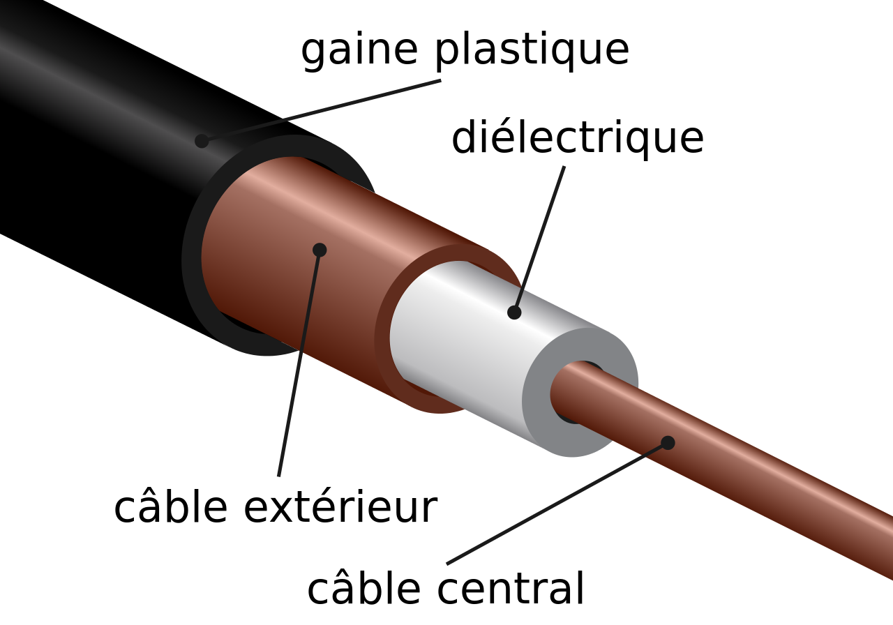

<!DOCTYPE C.png>
<C.png>

  <head>
    <meta charset="utf-8">
    <meta name="viewport" content="width=device-width">
    <title>Portfolio Luderic Brosse</title>
    <link href='https://unpkg.com/boxicons@2.1.4/css/boxicons.min.css' rel='stylesheet'>'
    <link href="style.css" rel="stylesheet" type="text/css" />

  <body>
    <section class="header">
      <header class="header">
        <a href="#" class="logo">Portfolio</a>

        <i class='bx bx-menu' id="menu-icon"></i>

        <nav class="navbar">
          <a href="#home" class="active">Accueille</a>
          <a href="#Qui_suis_je?">Qui suis-je?</a>
          <a href="#Mon_parcours">Mon parcours</a>
          <a href="#portfolio"> Mon portfolio</a>
          <a href="#Contact">Me contacter</a>
        </nav>
      </header>
    </section>
    <!-- section home -->
    <section class="home" id="home">
      <div class="home-content">
        <h3>Bienvenue sur mon portfolio!</h3>
        <h1>Luderic BROSSE</h1>
        <h3><span>étudiant en </span>1ére année <span>en BUT</span> Réseaux et Télécommunications</h3>
        <h4>N'hésitez pas à vous balader sur mon portfolio pour découvrir mes exploits dans le domaine de l'informatique et mieux me connaitre </h4>
        <div class="social-media">
          <a href="https://www.instagram.com/luderic_brosse_/" target="_blank"><i class='bx bxl-instagram bx-flip-horizontal bx-burst' ></i></a>
          <a href="https://www.linkedin.com/in/ludericbrosse/" target="_blank" ><i class='bx bxl-linkedin-square bx-fade-left' ></i></a>
        </div>
        <a href="Cv ludericbrosse.pdf" class="btn">Télécharger mon CV</a>
      </div>

      <div class="home-img">
        
      </div>
    </section>
    <!--section qui je suis ?-->
    <section class="Qui_suis_je?" id="Qui_suis_je?">
      <div class="about">
        <div class="about-img">
          
        </div>
        <div class="about-content">
          <h2 class="heading">Qui-suis-je?</h2>
          <h3>Qui-suis-je ?</h3>
          <p>Bonjour à tous,</p>
          <p>Je suis actuellement étudiant en première année de BUT R&T, passionné par l'informatique depuis toujours. Dans le cadre de cette formation, mon objectif est de me spécialiser en cybersécurité, un domaine fascinant par ses enjeux et ses défis.</p>
          <p>En dehors de mes études, j'adore les voyages en mer et la plongée sous-marine, ayant vécu des expériences uniques en Polynésie Française. Mon intérêt pour les animaux est marqué par mon père, passionné par ces créatures.</p>
          <p>Je partage également mon temps libre en créant du contenu en direct sur YouTube et Twitch chaque weekend, développant ainsi mes compétences en communication et en discipline.</p>
          <p>En somme, je suis quelqu'un de passionné, curieux et prêt à relever de nouveaux défis. Je suis impatient de partager davantage sur mon parcours et mes réalisations dans mon portfolio.</p>
          <br>
          <br>
          <br>
          <a href="#Mon_parcours" class="btn1">Lire plus sur Moi</a>
          <br>
          <br>
          <br>
        </div>
      </div>
    </section>

    <!--section Mon parcours-->
    <section class="Mon_parcours" id="Mon_parcours">
      <h3>Parcours et Expériences</h3>
      <p>Permettez-moi de vous présenter un aperçu de mon parcours :</p>
      <ul>
        <li>
          <p>Diplômé avec mention bien au collège Jean Rostand, j'ai découvert ma passion pour les vidéos YouTube et les jeux vidéo.</p>
        </li>
        <li>
          <p>Au lycée Anne Marie Javouer, en Polynésie française, j'ai obtenu mon BAC STI2D avec mention assez bien, tout en développant un intérêt pour la plongée et le streaming.</p>
        </li>
        <li>
          <p>J'ai exploré l'univers des mythes de différentes mythologies et j'ai commencé à m'intéresser sérieusement à la programmation et aux composants informatiques.</p>
        </li>
        <li>
          <p>Mon intérêt pour la cybersécurité s'est renforcé au fil du temps, ouvrant de nouveaux horizons.</p>
        </li>
      </ul>
      <p>Ces expériences ont façonné ma personnalité et mes aspirations, et je suis impatient de poursuivre mon évolution dans le domaine de l'informatique et au-delà.</p>
      <br>
      <br>
      <br>
    </section>
    <!--section portfolio-->
    <section class="portfolio" id="portfolio">
      <h2 class="heading">Dernier <span>Projet!</span></h2>
      <p>Bienvenue sur mon portfolio!</p>
      <p>si vous voulez plus de détails sur mes projets veuillez passer votre souris sur les images.</p>
      <p>Voici quelque projet que j'ai classé sous 4 catégories et mise à jour régulièrement et réalisés durant mes années de lycée et en BUT1 qui
        montre mon évolution dans ces domaines.</p>
      <div class="portfolio-container">
        <div class="portfolio-box">"
          
          <div class="portfolio-layer">
            <h4> En Info</h4>
            <p>Si vous cliquez sur le lien vous trouverez mon projet fait en info au cours des 3 dernières années</p>
            <p>Ceux-ci pourront prouver mon évolution dans les languages de programmation HTML CSS et PYTHON </p>
            <a href="En info.html" onclick="toggleMenu()"><i class='bx bx-link-external'></i> </a>
          </div>
        </div>
        <div class="portfolio-box">
          
          <div class="portfolio-layer">
            <h4>En Télécomunication</h4>
            <p>Si vous cliquez sur le lien vous mes projets fait en BUT 1 sur le thème de la télécommunication </p>
            <p>Ceux-ci pourront vous montrer mon évolution au cours de l'année de BUT 1 sur ce domaine </p>
            <a href="en telecomunication.html" onclick="toggleMenu()"><i class='bx bx-link-external'></i> </a>
          </div>
        </div>
        <div class="portfolio-box">
          
          <div class="portfolio-layer">
            <h4>En Réseaux </h4>
            <p>Si vous cliquez sur le lien vous mes projets fait en BUT 1 et en projet de Terminal sur le thème des
              réseaux</p>
            <p>Ceux-ci pourront vous montrer mon évolution au cours de l'année de BUT 1 et de terminal sur ce domaine </p>
            <a href="En reseaux.html" onclick="toggleMenu()""><i class='bx bx-link-external'></i> </a>
          </div>
        </div>
        <div class=" portfolio-box">
              
              <div class="portfolio-layer">
                <h4>Projet Personnels  </h4>
                <p>Si vous cliquez sur le lien vous mes projets personnels que je fais sur mon passant </p>
                <p>Ceux-ci pourront vous montrer mon implication malgré les moments difficiles et ma capacité à tenir un
                  emplois du temps</p>
                <a href="projetpersonel.html" onclick="toggleMenu()"><i class='bx bx-link-external'></i> </a>
              </div>
          </div>
        </div>
    </section>
    <section class="Contact" id="Contact">
      <h2 class="heading">Contactez <span>moi</span></h2>
      
      <div class = "insta" ><a href="https://www.instagram.com/luderic_brosse_/" target="_blank"><i class='bx bxl-instagram'></i>Me contacter sur instagram</a></div>
      <div class="linkedin"><a href="https://www.linkedin.com/in/ludericbrosse/" target="_blank" ><i class='bx bxl-linkedin'></i>Me contacter sur linkedin</a></div>
      <div class="mail"><a href="mailto:proludericbrosse@gmail.com" target="_blank"><i class='bx bx-envelope'></i>Me contacter par mail</a></div>
      

    </section>

    <footer class="footer">
      <div class="footer-text">
        <p>Copyright &copy; 2024 par Luderic BROSSE</p>
      </div>
    </footer>


    <script src="Java_ma_page.js"></script>
  </body>
